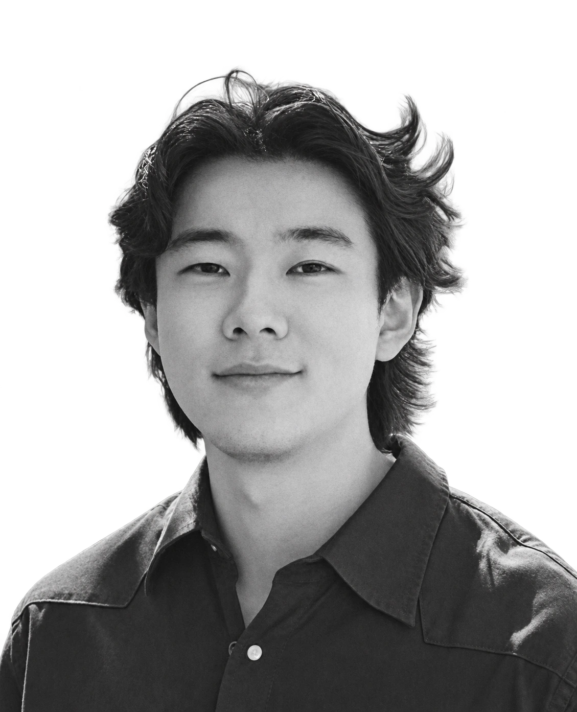
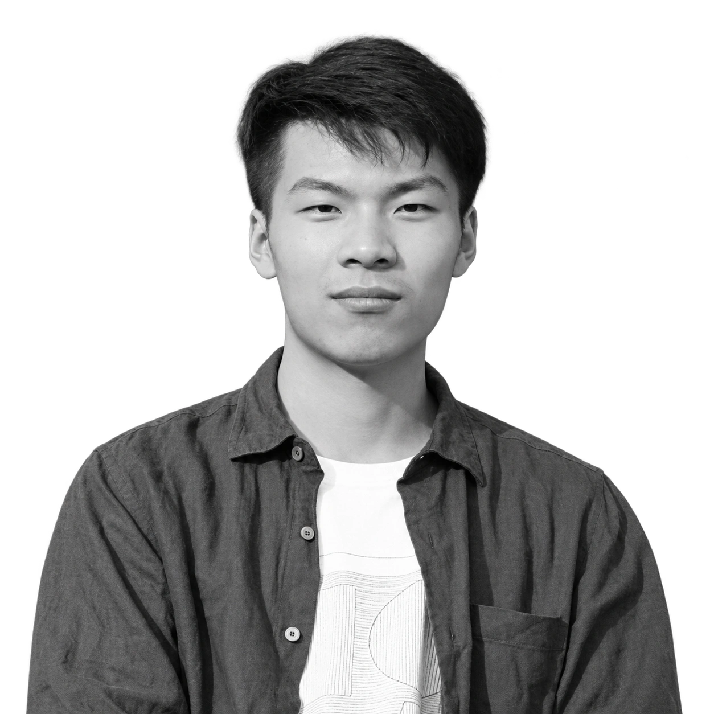

BEYOND
BOUNDARIES.
We are an evolving design practice rooted in landscape architecture, but not defined by its boundaries.
Our approach +
We believe the future of design should not be constrained by disciplinary boundaries, fixed methodologies, or conventional paths of practice. Curiosity drives us to question, critical thinking challenges established conventions, and bold imagination and continuous experimentation open up new possibilities. We believe theory and practice must inform and advance one another, allowing ideas to move beyond abstraction and be tested, developed, and realized in the world. We embrace ambitious thinking and recognize that meaningful innovation demands rigorous judgment, patient exploration, and determined execution. Openness does not mean a lack of conviction, nor does experimentation excuse carelessness. We ground our freedom to explore in professional rigor and pursue our boldest ideas with persistence and resolve.
We are committed to creating tangible social and ecological value, but our ambitions extend beyond the outcomes of individual projects. In response to increasingly standardized approaches to design and the persistent divide between research and professional practice, we seek to challenge conventions and expand how design is conceived, organized, practiced, and communicated. We also believe that landscape architecture plays a profound yet often overlooked role in shaping everyday life and the environments we inhabit. Its value deserves greater public recognition and understanding. Through design, research, experimentation, and public engagement across different media, we aim to bring the knowledge, processes, and creative potential of design beyond professional circles and into broader cultural conversations.
We value the depth of our disciplinary foundations without being confined by them. We embrace the unknown while remaining grounded in purposeful action. We believe design has the power to move beyond what exists and imagine what comes next. Our mission is not only to create meaningful work, but to advance the possibilities of design itself through continuous inquiry, fearless imagination, and steadfast practice—and to make its transformative potential visible to a wider world.
Zicheng (Kai) Zhao

Zicheng (Kai) Zhao is an award-winning landscape designer and researcher whose work explores fieldwork-based research, public space, materiality, and the dynamic relationships between ecological processes and urban life. He holds a Master of Landscape Architecture from the University of Pennsylvania Weitzman School of Design and a Bachelor of Design in Architecture from the University of Minnesota. At Penn, he received the Laurie D. Olin Prize in Landscape Architecture and the ASLA Student Certificate of Honor.
+
Kai is currently a Landscape Designer II at OLIN, where he contributes to cultural, civic, hospitality, campus, and public-realm projects from concept design through schematic design and design development. His professional experience also includes work with Field Operations, SWA/Balsley, and NV5, where he contributed to public engagement, urban research, planting and paving studies, detailed design packages, visualization, and construction documentation.
Kai’s work has been recognized by the American Society of Landscape Architects, World Landscape Architecture, LA+ Journal, LAGI, and other international design competitions. His project Stitching Kingston, Community to Coast received the 2024 National ASLA Student Urban Design Award of Honor. His later work received the 2025 National ASLA Student General Design Award of Honor, the 2025 PA-DE ASLA Analysis & Planning Award of Excellence, the 2025 WLA Outstanding Award in Concept – Small Design, and First Place in the 2025 ASLA Emerging Professionals Design Competition. He also received First Place in the Design the World You Want International Competition.
His speculative and competition work has been recognized by LA+ Journal, including Third Place in the LA+ EXOTIQUE Design Competition and an Honorable Mention in the LA+ INTERRUPTION Design Competition. His research and design work have been published or exhibited through Springer Nature, the Goldstein Museum of Design, LA+ Journal, and the German National Garden Show.
Dingwen Wu

Dingwen Wu is a multi-disciplinary designer dedicated to the integrated, full-lifecycle design of architecture, landscape, and urban environments. From large-scale urban strategies to intimate human experiences, he believes that successful design emerges through the connection between vision and detail. He is particularly passionate about how grand urban narratives translate into tactical spatial experiences, maintaining a rigorous pursuit of meticulous detailing and spatial quality. Driven by a philosophy that space should resonate emotionally, Dingwen strives to create vibrant, living environments that foster meaningful human connections and evoke lasting memories.
+
Dingwen holds a Master of Landscape Architecture from the University of Pennsylvania, where he was awarded the prestigious ASLA Student Certificate of Honor. He earned his Bachelor of Architecture from Tongji University. Prior to his current practice, he has developed a global perspective through his experience working at internationally recognized design practices, including SWA New York, Field Operations, and !melk Landscape Architecture and Urban Design. His award-winning work has been recognized globally, receiving accolades such as the International Design Award (IDA), Muse Design Award (Silver), New York Architectural Design Award, and London Design Awards.
Yuehui Gong
Yuehui Gong is a designer whose work is grounded in curiosity toward place, process, and the relationships between people and their environments. She believes design is not a fixed product, but an ongoing process of engaging with the movement of water, the growth of plants, the traces of history, and the everyday ways people inhabit a landscape. Yuehui sees landscape as an adaptive, layered, and open-ended system that can hold memory, support ecology, and create more generous forms of public life.
+
Yuehui received her Master of Landscape Architecture from the University of Pennsylvania Weitzman School of Design, with a Certificate in GIS and Spatial Analysis, where she was awarded ASLA certificate of merit and the Robert M. Hanna Prize in Design. She earned her Bachelor of Urban and Rural Planning from Southeast University.
Her professional experience spans landscape architecture practice in the United States, including SWA, SGA, and SCAPE, where she has contributed to work across public realm design, waterfront resilience, ecological restoration, geospatial analysis, and community-centered planning.
Yuehui’s award-winning work has been recognized by LA+, World Landscape Architecture, and TerraViva Competitions, reflecting her continued interest in design as a way to connect ecological processes, cultural narratives, and lived experience.
Jiewen Hu
Jiewen Hu is a designer whose work explores cultural landscapes and the relationship between memory, trauma, and the built environment. Through both professional practice and independent design research, she is interested in creating socially grounded, materially expressive spaces that respond to complex environmental and historical conditions. Her long-term interests extend to trauma-informed design and the role of place in memory, healing, and collective experience. She holds a Master of Landscape Architecture and a Certificate in GIS and Spatial Analysis from the University of Pennsylvania, and a Bachelor’s degree in Landscape Gardening from Zhejiang University.
+
Jiewen is currently a Landscape Designer II at OLIN, where she contributes to civic, cultural, ecological, and resilience-focused projects across the United States. Her project experience includes the Tennessee Performing Arts Center in Nashville, Origin Park in Clarksville, the Los Angeles Park Needs Assessment, Denver Civic Center, Philadelphia International Airport Sustainability Consulting, and Commemorative Landscape Study in Washington, D.C.
Jiewen’s work has been recognized by the American Society of Landscape Architects, World Landscape Architecture, and other professional organizations. Her project From Separation to Ambiguity received First Place in the ASLA Emerging Professionals Design Competition. Her projects From Ruins to Roots and Stitching Kingston received ASLA National Student Honor Awards in General Design and Urban Design. She has also received the PA-DE ASLA Analysis & Planning Award of Excellence, the WLA Outstanding Award in Concept – Small Design, and First Place in the Design the World You Want International Competition. Her design projects have also been published or exhibited in ASLA LAND, Landscape Architecture Magazine (LAM), the WLA Shanghai International Forum, and Melbourne Design Week.